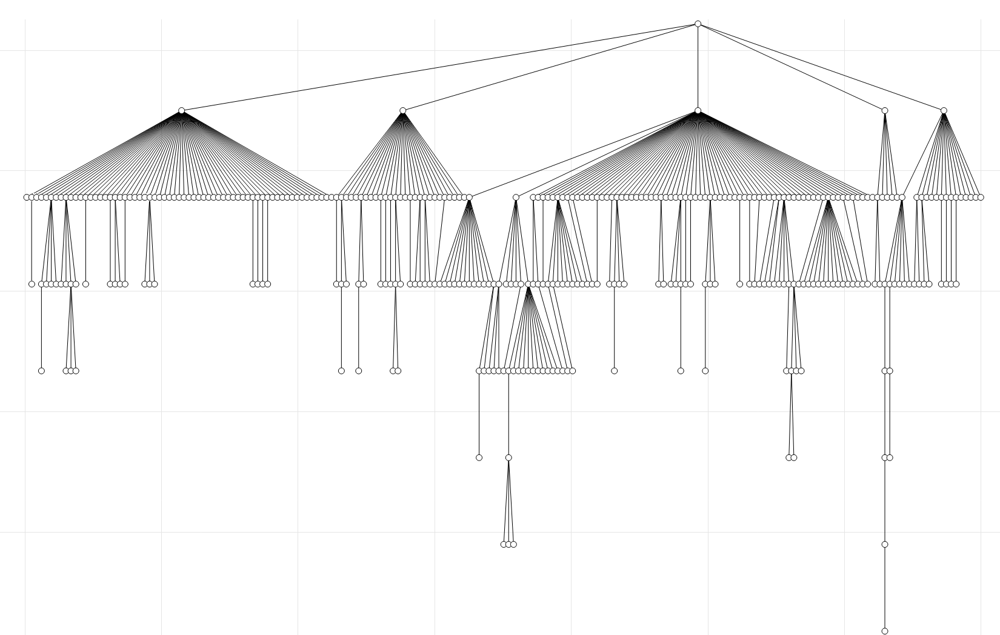

Searching chemical space
Posted on 26 Jul 2021 by Trevor Gokey
The basis of SMIRNOFF is the use of SMIRKS (or SMARTS) patterns to define parameters. This has a lot of benefits and makes parameter design and force field fitting a unique experience. Because of this uniqueness I have found a need to use SMARTS in a way that just hasn’t been needed until now. SMARTS are normally applied to a SMILES pattern which makes SMARTS a type of substructure query on a molecule. In order to create a new parameter we need a new SMARTS pattern. To find a new SMARTS pattern we need to compare the matching chemistries which are SMARTS patterns themselves to both each other and the force field parameter SMARTS pattern. Thus, we need to do things like perform a SMARTS search on a SMARTS pattern. An internet search on internet searches, if you will. I spent some time on this problem and this post is devoted to explaining some of the primary aspects of this work.
Let’s make everything concrete with an example. Take an angle SMARTS [*:1][#6:2][*:3] and apply it to propane, C3H8. If we only consider angles where the SMARTS only use three atoms, we have a total of four SMARTS patterns: [#6:1[#6:2]][#6:3], [#6:1[#6:2]][#1:3], and [#1:1[#6:2]][#1:3] are in the force field SMARTS parameter [*:1][#6:2][*:3]. I will use the shorthand CCC, CCH, HCH, and *C* to refer to these patterns, respectively.
In order to work with these, we need a programmatic way to:
- Establish that the propane angle SMARTS patterns are, in fact,
inthe parameter SMARTS - Split
*C*in order to partition the propane angles into different parameters
Splitting *C* is a lot harder than it looks. We know that we have three chemistries to handle meaning that there are four unique ways to partition this set. The underlying research question is which partitioning is optimal in the sense that we minimize the number of groups while maximizing performance. By group I mean a parameter in the SMIRNOFF force field, and by performance I mean the ability of the force field to accurately describe chemistry the parameter groups together. Should CCC and HCH have different force constants? Should CCC and CCH have the same equilibrium angle? Should they all use the same parameters?
Currently, we encounter “chemical perception” issues any time we are trying to either fit a custom set of parameters to a single molecule, or if we run into anomalies in the mainline force field where it appears to have bunched certain functional groups together with conflicting physics. The way it is currently solved in the first case is by randomly changing the SMARTS until the desired partition is achieved and by manual manipulation of the SMARTS in the latter case. Chemical space is large; good automation is hard. The partitioning issue highlights this perfectly. The number of ways we can group the three chemistries, CCC, CCH, and HCH is combinatorial problem, and isn’t an issue here but it is for any useful case. Deciding which groups to actually select and use as parameters also requires SMARTS patterns that can encode the partitioning correctly. There are partitions that SMARTS simply cannot represent. This is essentially why, in our current approach of fitting parameters to single molecules, we require a priori the desired groups, and we use random jumps in the SMARTS patterns ad nauseam until the groups are distinct. This approach is generally intractable for the mainline force field, hence the use of manual intervention to split parameters.
Searching chemical space grabbed my attention because it seemed like such an underdeveloped area in Open Force Field, and there was a real need to automate parameter generation for the mainline force field. As someone with some background in computer science, the first time I learned about SMARTS, a knee-jerk thought to myself was “how is equality defined between two SMARTS, and given a SMARTS, what SMARTS comes next?” Equality and iteration are two important, and I believe necessary elements of most data structures. Defining equality is somewhat straightforward if we ignore symmetries (e.g. [#6][#1] versus [#1][#6]), but defining the next adjacent SMARTS is a little more esoteric. In the propane example, it makes sense that if I have an HCH angle, the next SMARTS would be HCC, and then CCC, or something along these lines. But how does one programmatically do this, and what was the underlying mental model I used to determine this? In any case, if we can determine the next SMARTS, we can iterate, and if we can iterate and establish equality, we can search, and searching is exactly what we need.
Long story short, we can search chemical space by treating a SMARTS pattern as a bunch of ordered switches. I call them bits, but switches give a nicer mental image. The *C* SMARTS has three atoms, and the * means all switches are on, and the center atom only has the carbon switch on. We can iterate through this SMARTS pattern by turning switches off, and a new SMARTS pattern is generated every time a switch is flipped. The effect of this is an enumeration of chemical space defined by the given SMARTS. Luckily, we don’t need to consider the entire space of *C* as the wildcards allow the entire periodic table, but rather only the chemical space we have support for, e.g. the space defined by propane. As we include more molecules, the chemical space that the SMARTS covers will increase, meaning that more switches will turn on, e.g. NCH, NC=C, etc. With this method, we only have to consider this subset of the very large chemical space. In general, each parameter will carve out a chemical subspace, and turning off switches is a way to search inside the parameter.
I’ve found general success in searching chemical space of a parameter by only searching the “adjacent” SMARTS patterns, meaning only a few switches at a time. More specifically, at most two switches for bonds and angles and three switches for torsions in effort to combat symmetries in the patterns. Not only does this avoid randomly jumping around it significantly reduces the candidates to consider. It also follows the idea of keeping the SMARTS patterns general: turning off one switch is equivalent to cutting the chemical space in half although it may not cut the dataset in half. Hand manipulation of SMARTS patterns usually goes against the grain on this principle. We tend to try to pull out very specific chemistries in a SMARTS, meaning that we in effect end up creating the least general parameter. Likely, there is a generalization that is equally effective and enjoys the benefit of capturing similar chemistry not yet observed or trained on. In other words, the generalized parameter is more transferable and less prone to overfitting. We strive for a mainline force field that “always works” or at least doesn’t fail. We want coverage, accuracy, and simplicity. Hopefully it’s not a “here’s three criteria, choose two” type of deal.
A brief code example
This section will show how chemical space can be searched. To keep things simple, we use propane and only distinguish SMARTS using elements. The following is some code that shows how this works, and will follow the above example: the CCC, CCH, and HCH angles of propane. These patterns will be applied to a *C* SMARTS parameter, and we will search and find splits using a single switch. Absent from this section is how to determine which split is “better,” since it would require some score or criteria for each angle. In my research, I use a variety of criteria, but all revolve around the quality of fit to some reference or calculated values.
First some plumbing to start things off. The MoleculeGraph will represent propane, and the AngleEnvironment will be used to describe the propane angles in addition to the force field parameter. ATOM_UNIVERSE is a utility to define what a wildcard atom is ([*]), and will help to give our SMARTS patterns a little more clarity.
from offsb.chem.graph import MoleculeGraph, AngleEnvironment
from offsb.chem.types import ATOM_UNIVERSE
from functools import reduce
from operator import add
The SMILES and SMARTS languages contain many descriptors to encode a molecule. The typical fields for these descriptors are enabled by default, but to show the simple propane example we will turn off all defaults except the element field for atoms and bond order for bonds. We could have utilized the H field, which would be able to distinguish the methylene carbon without using graph operations. The methylene carbon is [#6H2] versus [#6H3] for the other two methyl carbons which are indistinguishable in propane.
def configure_fields(obj):
disable_atom_smarts_fields = ["H", "X", "x", "r", "aA", "q"]
disable_bond_smarts_fields = ["aA"]
for field in disable_atom_smarts_fields:
obj.atom_disable(field)
for field in disable_bond_smarts_fields:
obj.bond_disable(field)
Part 1: Defining and chemically perceiving propane
First we must generate the molecule. The code will compute the molecular graph and subgraphs of all internal coordinates (bonds, angles, etc.), and will try hard to make the SMARTS of each internal coordinate unique. It does this by growing the subgraphs until uniqueness or the entire molecule has been spanned. A depth limit of 0 will cause only the “primary” atoms of the internal coordinate to be kept; for angles this would be the three atoms.
mol = MoleculeGraph.from_smiles("CCC", protonate=True, depth_limit=None)
configure_fields(mol)
Now generate the angle environments and print their SMARTS. Here we see that the CCC bond, shown on the first output line, only uses the primary atoms since it is unique compared to the other angles. By default, we do not use hydrogen to establish uniqueness as this information can usually be compressed and captured in the H field. This compression allows much efficient searching on bits rather than using more expensive graph-based algorithms when performing operations on the SMARTS patterns.
angles = mol.angles()
for idx, angle in angles.items():
smarts = angle.to_smarts()
print(idx, smarts)
(0, 1, 2) [#6:1]-[#6:2]-[#6:3]
(0, 1, 6) [#1:1]-[#6:2](-[#6])-[#6:3]
(0, 1, 7) [#1:1]-[#6:2](-[#6])-[#6:3]
(1, 0, 3) [#1:1]-[#6:2]-[#6:3]-[#6]
(1, 0, 4) [#1:1]-[#6:2]-[#6:3]-[#6]
(1, 0, 5) [#1:1]-[#6:2]-[#6:3]-[#6]
(1, 2, 8) [#1:1]-[#6:2]-[#6:3]-[#6]
(1, 2, 9) [#1:1]-[#6:2]-[#6:3]-[#6]
(1, 2, 10) [#1:1]-[#6:2]-[#6:3]-[#6]
(2, 1, 6) [#1:1]-[#6:2](-[#6])-[#6:3]
(2, 1, 7) [#1:1]-[#6:2](-[#6])-[#6:3]
(3, 0, 4) [#1:1]-[#6:2](-[#1:3])-[#6]-[#6]
(3, 0, 5) [#1:1]-[#6:2](-[#1:3])-[#6]-[#6]
(4, 0, 5) [#1:1]-[#6:2](-[#1:3])-[#6]-[#6]
(6, 1, 7) [#1:1]-[#6:2](-[#6])(-[#6])-[#1:3]
(8, 2, 9) [#1:1]-[#6:2](-[#1:3])-[#6]-[#6]
(8, 2, 10) [#1:1]-[#6:2](-[#1:3])-[#6]-[#6]
(9, 2, 10) [#1:1]-[#6:2](-[#1:3])-[#6]-[#6]
Since we can define uniqueness in these graphs, we can use a python set to find all of the unique angle SMARTS in propane.
unique = set(angles.values())
for angle in unique:
print(angle.to_smarts())
[#1:1]-[#6:2](-[#6])-[#6:3]
[#6:1]-[#6:2]-[#6:3]
[#1:1]-[#6:2]-[#6:3]-[#6]
[#1:1]-[#6:2](-[#6])(-[#6])-[#1:3]
[#1:1]-[#6:2](-[#1:3])-[#6]-[#6]
The next step is to aggregate all of the angle environments into a single environment in order to prepare for parameter searching. This is performed by taking the union of the graphs, and by default if two of the graphs are not bijective (every atom in one graph maps to exactly one atom in the other), then only the injective map is kept and unioned (atoms not mapped are dropped). Here, we specify that we want to add unmapped nodes (atoms) which is analogous to graph composition. The resulting SMARTS will be very large and complicated but it will match every unique SMARTS defined above. I call it the “branching SMARTS” pattern for a reason I give later. The branching SMARTS contains all of the individual SMARTS used to construct it, but using this pattern on propane will match nothing and is therefore not useful as a force field parameter. Conversely, we can also find the “most general” SMARTS which will actually find all of the propane angles and is therefore useful as a force field parameter. It will be shown below, but for the impatient it is [#1,#6:1]-[#6:2]-[#1,#6:3].
group = reduce(lambda x, y: x.union(y, add_nodes=True), angles.values())
print(f"group: {group.to_smarts()}")
group: [#1,#6:1]-[#6:2](-[#6]-[#6])(-[#6])-[#1,#6:3]-[#6]
Part 2: Comparing propane angles to a force field parameter
Here we create a SMARTS that could be used as a force field parameter. This parameter would match every angle in propane. Below we will start to explore how to search this chemical space to find new parameters based on this parent parameter.
ff_param = AngleEnvironment.from_smarts("[*:1][#6:2][*:3]")
configure_fields(ff_param)
We use the in keyword to figure out if the parameter would match the group. The intersection of the parameter and the group will drop all atoms that have no mapping between the two, and produce the “most general” SMARTS. In this case, it will only keep the three primary atoms.
print(f"fitted: {(ff_param & group).to_smarts()}")
print(f"fitted in ff_param? {(ff_param & group) in ff_param}")
fitted: [#1,#6:1]-[#6:2]-[#1,#6:3]
fitted in ff_param? True
Part 3: Search the chemical space of propane angles for new parameters
Before jumping in, I will address some confusion in SMARTS patterns when it comes to wildcards, e.g. [*]. Here we define what a wildcard is by specifying what the “universe” is. In most cases this will be the whatever the dataset contains; here just carbon or hydrogen: [#1,#6].
The Environments are graphs with SMARTS information embedded within, so we go to the first (primary) atom and extract the SMARTS information.
atom = reduce(add, mol.atoms().values())
print(atom.to_smarts())
ATOM_UNIVERSE = atom.nodes[0]["primitive"]
[#1,#6:1]-[#6]-[#6]
Note that the SMARTS here has more than one atom because the reduction creates an AtomEnvironment, which would be equivalent to a vdW parameter. Like angles, vdW environments also work to make each SMARTS pattern as unique as possible*. Here we see that [#1,#6:1]-[#6]-[#6] is the branching SMARTS that would contain all of the AtomEnvironments. The most general here is [#1,#6:1] primarily due to the fact that the methylene carbon is unique and has the SMARTS [#6:1] compared to the two methyl carbons that were spanned to [#6:1][#6][#6] since the code could not distinguish them. This has some subtle issues that are out of scope, but the methlyene carbon environment can be expanded by increasing min_depth during molecule creation. In general, one should set min_depth to the maximum depth the force field parameters are allowed to have.
Now we search the chemical space of the angle parameter by flipping one switch at a time. The code terms these switches “bits” for an explicit reason. In order to perform all of these operations so far, the SMARTS are encoded as bit vectors and everything shown so far has worked by orchestrating a bunch of standard bitwise operations to give the desired computation. The iter_bits method will go through the graph and produce an AngleEnvironment with just that one bit present (and is definitely not a valid SMARTS!). Because not all bits are useful we only generate bits where there are multiple bits set. For example there is no use in searching something like [#6] but we do want to search something like [#6,#1]. Turning off the carbon in [#6] would lead to an invalid SMARTS, so there is no point to consider it.
The switch can be turned off programmatically in the group by using subtraction, or marginal in set theory.
Note that when we turn off a switch on a parameter that uses a wildcard, we get something like [!#1] for example if the switch is hydrogen. Although perfectly reasonable and technically correct when operating on [*], it is not very friendly for human consumption. We can get to the heart of the matter by intersecting it with the universe. This will essentially evaluate what [!#1] means which is [#6] in this example. Lastly, it might appear bizarre that the full version produced a bunch of wildcard atoms. The underlying reason is that the switch is embedded in the same graph topology of the group, which is the branching SMARTS, whereas the force field parameter only has a graph of three atoms. When taking marginals, we must consider the fact that SMARTS are substructures and can sometimes possess incomplete information. In addition, SMARTS can also serve as describing molecular fragments, so although the information content in the switches is clear, the graph topology is a little more obtuse and flexible. Thus, we assume that graphs may sometimes have “hidden” nodes that are either wildcards (all switches) or null (no switches) when performing certain operations. This idea of a single switch potentially being embedded in a graph of arbitrary topology further highlights the complexity of searching chemical space. Here, at least we can see it explicitly and choose to ignore it by just taking some intersections and dropping excess graph topology :)
full = set()
partial = set()
for switch in group.iter_bits(skip_ones=True):
specialized = ff_param - switch
specialized_smarts = specialized.to_smarts()
fitted = ff_param & specialized
fitted_smarts = fitted.to_smarts(atom_universe=ATOM_UNIVERSE)
print(
f"Full: {specialized_smarts} "
f"Fitted: {fitted_smarts}"
)
full.add(specialized)
partial.add(fitted)
Full: [!#1:1]-[#6:2](~[*]~[*])(~[*])-[*:3]~[*] Fitted: [#6:1]-[#6:2]-[#1,#6:3]
Full: [!#6:1]-[#6:2](~[*]~[*])(~[*])-[*:3]~[*] Fitted: [#1:1]-[#6:2]-[#1,#6:3]
Full: [*:1]-[#6:2](~[*]~[*])(~[*])-[!#1:3]~[*] Fitted: [#1,#6:1]-[#6:2]-[#6:3]
Full: [*:1]-[#6:2](~[*]~[*])(~[*])-[!#6:3]~[*] Fitted: [#1,#6:1]-[#6:2]-[#1:3]
Show only the unique matches on the parameter that matched the same number of atoms, since turning off certain switches will lead to the exact same result.
print("Unique fitted SMARTS:")
for fitted in partial:
fitted_smarts = fitted.to_smarts(atom_universe=ATOM_UNIVERSE)
print(fitted_smarts)
Unique fitted SMARTS:
[#6:1]-[#6:2]-[#1,#6:3]
[#1:1]-[#6:2]-[#1,#6:3]
Digesting these results, we see that iterating over a single switch allowed us to learn a few things albeit somewhat complicated at first. This simple example highlights several aspects which make parameter search difficult. First, note that CCH matches either parameter, so order matters. They also define the exact same split, and so even with the simplest case we see that chemical space is fraught with symmetries that can potentially grind our poor python codes to a crawl. An unfortunately large amount of time on my end is identifying these and trying to program around them, but I show them here explicitly for transparency.
Second, we didn’t get the nice clean HCH parameter we might have expected; the result was that one parameter has carbon first, and the other has hydrogen. This is explicitly due to the fact that we only searched a single switch, so the new parameters could only distinguish one thing: carbon and hydrogen on one atom. If we want to distinguish HCH from CCC, we need two switches. In my production code, multiple switches are used only in specific scenarios by stacking (unioning) them together, and are used only when the single switch is unable to separate the data. For example, if we have *C* as a parameter that only matches HCH and CCH, then creating a new parameter like *CH would cause all the angles to match the new parameter and the old parameter would be rendered useless. Adding another switch would allow a split in such data to occur. Conversely, there are instances where certain switches do nothing, and all data still lives in the original parameter.
Third, these two new parameters, as they are more “specialized” than [*:1][#6:2][*:3], would be put under the parent parameter. If we only take one of these parameters (they communicate the same split), the result would be a force field with two angle parameters. The [*:1][#6:2][*:3] pattern would come first, and [#6:1]-[#6:2]-[#1,#6:3] second. The SMIRNOFF specification says that the last parameter to match is the one that sticks; the lower the parameter is in the force field, the higher priority it has. When applied to propane, CCC and CCH would match the second parameter, and the remaining HCH would match the first, [*:1][#6:2][*:3]. Another aspect of this approach is that the specialized parameter actually matches more chemistry than the more general [*:1][#6:2][*:3] pattern. This means that, using this approach of turning off switches, more specific chemistries are higher up in the hierarchy (less priority) with most chemistry being captured near the bottom (higher priority). Now, let’s say that we split the second parameter to [#6:1]-[#6:2]-[#1:3]. Now we have three parameters, three unique angles, but the first angle parameter is still [*:1][#6:2][*:3] and the second is still [#6:1]-[#6:2]-[#1,#6:3]! The point here is that one should always be wary against what a parameter claims to cover, and what it actually covers. Parameter SMARTS in the SMIRNOFF hierarchy do not exist in isolation and their utility is completely determined by where they exist in the hierarchy.
Now, show the same calculation but using the full SMARTS, which will have many additional atoms in the SMARTS. Also, resolve the wildcards and negations using the ATOM_UNIVERSE.
print("Unique full values:")
for specialized in full:
specialized_smarts = specialized.to_smarts(atom_universe=ATOM_UNIVERSE)
print(specialized_smarts)
Unique full values:
[#1,#6:1]-[#6:2](-[#6]-[#6])(-[#6])-[#6:3]-[#6]
[#6:1]-[#6:2](-[#6]-[#6])(-[#6])-[#1,#6:3]-[#6]
[#1:1]-[#6:2](-[#6]-[#6])(-[#6])-[#1,#6:3]-[#6]
[#1,#6:1]-[#6:2](-[#6]-[#6])(-[#6])-[#1:3]-[#6]
The main result for the tagged atoms is essentially the same as above, except there are more unique SMARTS because the environments are different. These branching SMARTS have a very specific purpose for finding new parameters which I eluded to earlier. Recall that reducing these into a single AngleEnvironment would produce a branching SMARTS. The atoms that extend beyond the parameter can act as new branch points to explore chemical space with more atoms. For example, recall that the force field parameter has the SMARTS [*:1][#6:2][*:3]. These results indicate that we can possibly specialize this parameter and split it using [*:1][#6:2]([#6])[*:3], for example. In general, some of the angles may have this added branch, and some may not; branches provide more information to partition the chemistries. Thus, these branching SMARTS allow chemical space exploration and generate force field parameters that perceive beyond the chemistry they currently capture.
Finally, coming back to the idea of only considering one or two switches at a time, complex parameters can be found in two ways with this approach. Since the search space of including multiple bits grows rapidly, it is almost necessary to only consider a few switches at a time. One may in principle try to exhaustively search all switch combinations, but experience has shown me that this might not be necessary. If this doesn’t seem like a problem at first glance, consider a torsion that has fifty switches to iterate and we consider four switches. This would be at most 50C4 = 230300 potential ways to create a new parameter, and additionally noting that the mainline forcefield contains about 100 torsion parameters to consider. The more promising second approach to finding highly specific parameters is by incrementally taking small steps, using only one or two switches at a time. For example, if we search and find a split using only one or two switches, we can repeat the same process and potentially find a split that is now four switches different than the first parameter, which would reduce our space to at most 2(50C2) = 2450, since the number of bits in the intermediate parameter could be less than fifty after the first split. We can then delete the intermediate parameter if the data says it is beneficial to do so. Thus, the split that required four switches was found without needing to evaluate all combinations of four switches. Using this approach, we see that it is akin to crossing a river by quickly jumping across it by using a series of stepping stones rather than using time and resources to build a trebuchet to hurl ourselves over in one big “jump.” In more technical terms, we can potentially make chemical space search effectively polynomial or even linear if we are able to find small, incremental improvements. This potentially shies away from finding a globally optimal solution, but it is a vast improvement over designing parameters by hand.
Conclusion
Chemical space can be navigated using a series of SMARTS switches embedded in a graph topology. The chemical space of propane angles were explored by iterating through the switches. The searches produced patterns that are able specialize existing SMARTS by turning off switches or by adding more atoms to graph, enriching the chemical perception environment. SMARTS patterns can be compared directly by performing bitwise operations, including the ability to explicitly determine SMARTS hierarchy relationships.
Taking the hierarchy idea further, it is possible to explicitly form the SMIRNOFF hierarchy. Below I am showing the hierarchy of the Open Force Field Parsley 1.3.0 version. The first level is the root which symbolically represents the file, and the second level contains the parameter handlers. Here the Bonds, Angles, ProperTorsions, ImproperTorsions, and vdW parameters are shown, in order. Next the parameters are then read from the flat list of parameters and rearranged such that the most general parameters are at the top. For example if parameter B is underneath parameter A, then the SMARTS of B is in A, much like [#6:1][#6:2][#1:3] is in [*:1][#6:2][#1:3]. If this is not true, then the parameters are placed side by side on the same level. In order to flatten this hierarchy to represent in the standard XML format, the parameters are visited from top to bottom, left to right.
